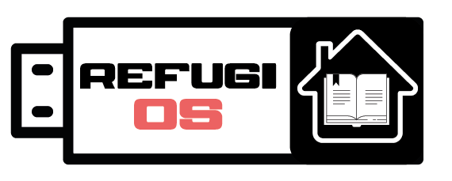
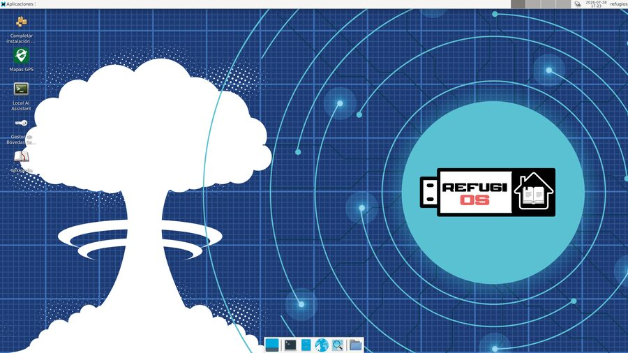
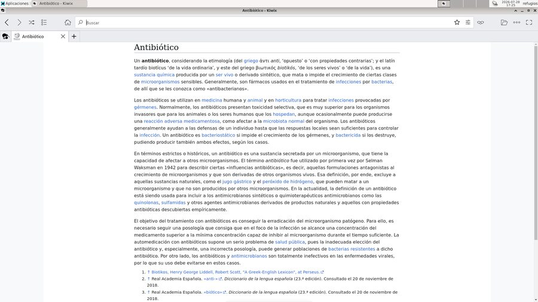
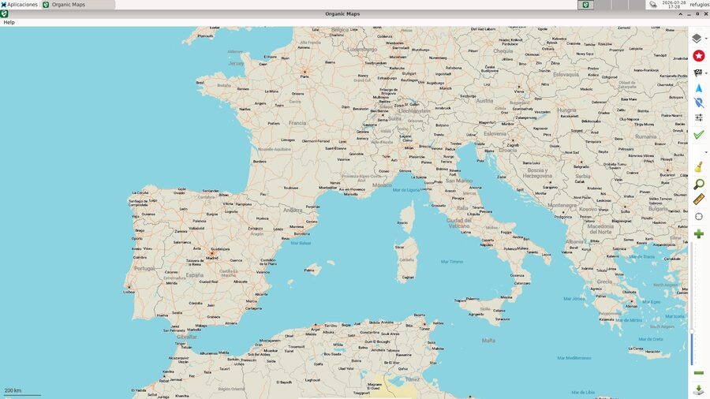

Tu refugio digital y biblioteca de supervivencia.
refugiOS es un sistema operativo portátil que arranca desde un pendrive en cualquier ordenador y funciona sin conexión a Internet. No se instala en el disco duro ni sustituye a tu sistema: lo llevas contigo y lo usas donde haga falta. La idea es sencilla: prepáralo hoy en casa, con calma y con buena conexión, para tenerlo listo el día que no haya red.
Una vez configurado lleva dentro una copia de Wikipedia, cartografía de todo el mundo, un asistente de inteligencia artificial que se ejecuta en el propio equipo y bóvedas cifradas para tus documentos, sin depender de ningún servidor ni servicio en la nube. Es software libre, y tú decides qué contenidos entran y cuáles no.
Enciclopedia y guías, consultables sin red.
Mapas y posicionamiento sin cobertura.
Un asistente que funciona en tu propio equipo.
Cifrado para tus documentos personales.

El escritorio, con un acceso por módulo

La enciclopedia, consultada sin red

La cartografía, con todo el detalle
Hay más capturas de todas las aplicaciones, en español y en inglés, en el repositorio.
Descarga la imagen en tu idioma, descomprime el .zip y graba el fichero
.img resultante en un pendrive. Al arrancar, el asistente del escritorio
se encarga del resto.
Son varios gigabytes: con una conexión inestable el fichero puede llegar incompleto y
el pendrive no arrancar, sin más pista del motivo. Descarga
SHA256SUMS.txt (unos pocos bytes) en la misma carpeta que
el .zip y comprueba que coincide.
En Linux:
sha256sum --ignore-missing -c SHA256SUMS.txtEn macOS:
shasum -a 256 --ignore-missing -c SHA256SUMS.txtEn Windows, desde PowerShell (compara el resultado con la línea del fichero):
Get-FileHash refugios-base-16G-es.img.zip -Algorithm SHA256
Debe responder OK (o mostrar el mismo código). Si no coincide, vuelve a
descargar el .zip: no lo grabes. Y si al descomprimirlo el programa avisa
de un error, la descarga tampoco está completa.
Las instrucciones paso a paso, los requisitos y las guías completas están en GitHub.
refugiOS is a portable operating system that boots from a USB drive on any computer and works with no Internet connection. Once set up it carries a copy of Wikipedia, maps of the whole world, an AI assistant running on your own machine and encrypted vaults for your documents, depending on no server and no cloud service. Prepare it at home today, use it the day there is no network.